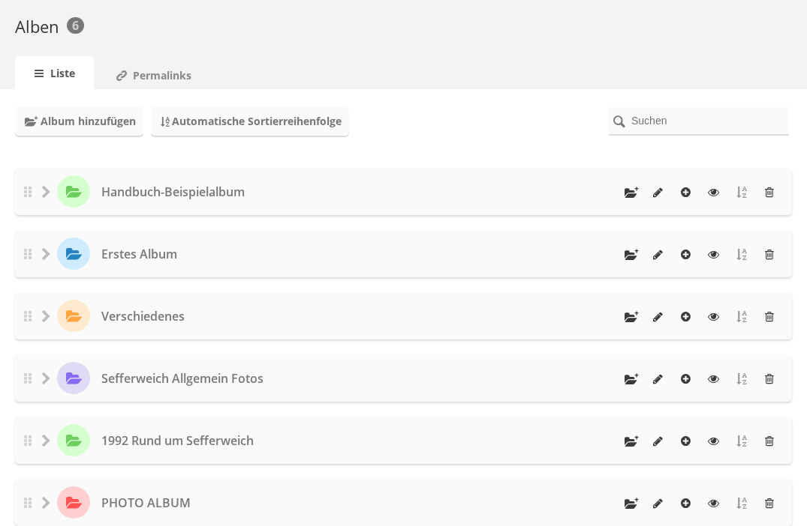
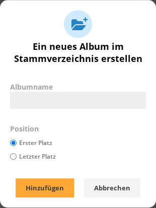
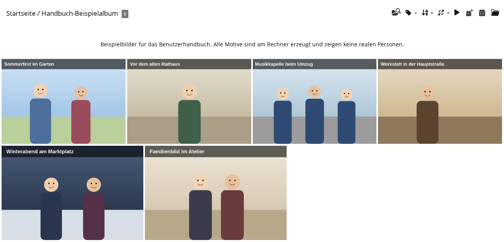

Alben gliedern die Galerie; ein Foto kann in mehreren Alben liegen. Administratoren legen sie
unter Verwaltung » Alben » Verwaltung
(admin.php?page=albums) an und bearbeiten sie dort.

Die Schaltflächen am rechten Rand einer Zeile, von links nach rechts:

Der Dialog hat kein Feld für die Beschreibung; sie wird danach in den Eigenschaften des Albums eingetragen.
admin.php?page=album-<nummer>-properties.
Die Felder auf dieser Seite:
Name und Beschreibung sind reiner Text. Was wie Auszeichnung aussieht, etwa
<b>fett</b>, erscheint genau so, wie es getippt wurde. Fett, kursiv
und Links gibt es in Beschreibungen nicht.
Oben zeigt die Seite, wann das Album erstellt und zuletzt geändert wurde und wie viele Fotos und Unteralben es enthält. Die Schaltfläche In Galerie öffnen unten links zeigt das Album so, wie Besucher es sehen.
Die Schaltfläche Herkunft öffnet einen Dialog mit vier Feldern: Physisches Album, Eigentümer, Gescannt am und Notiz. Sie beschreiben, woher die Originalabzüge des Albums stammen. Die Notiz heißt in den Eigenschaften eines Fotos Albumnotiz (siehe Titel, Autor, Datum und Beschreibung).
Einstellungen sichern speichert die Angaben beim Album; danach erscheint Herkunft gespeichert. Auf N Fotos anwenden überträgt sie auf die Fotos des Albums; N ist deren Anzahl.
Welche Werte übertragen werden, regelt diese Reihenfolge:
Haben Fotos des Albums schon eine Herkunft, die sich von den zu übertragenden Werten unterscheidet, fragt der Browser vor dem Schreiben nach, zum Beispiel 3 Fotos haben bereits eine Herkunft, die dabei überschrieben wird. Fortfahren? Die Zahl ist die der betroffenen Fotos. Wer die Frage abbricht, ändert nichts. Gibt es nichts zu überschreiben, läuft die Übertragung ohne Frage. Die eigene Notiz eines Fotos bleibt in jedem Fall unberührt; die Albumnotiz gehört zu den übertragenen Feldern.
Auf N Fotos anwenden gilt nur für Fotos, die schon im Album liegen. Später hinzukommende übernehmen die Werte von selbst, sofern sie noch keine Herkunft haben. Ohne diesen Schritt fehlt auf der Fotoseite die Zeile Herkunft.
In N Dateien schreiben überträgt die Werte zusätzlich in die Bilddateien selbst. Diese Schaltfläche fehlt, wenn der Server keine Metadaten schreiben kann.
Hat das Album keine Fotos, fehlen Auf N Fotos anwenden und In N Dateien schreiben.
Alle angemeldeten Benutzer, die das Album sehen, können seine Herkunft und ihre Änderungen auf der Seite des Albums nachlesen (siehe Herkunft nachlesen).
Ein Album ohne Foto ist für Besucher unsichtbar, weder in der Albenliste noch über seine Adresse. Sichtbar wird es, sobald es selbst oder eines seiner Unteralben ein Foto enthält. Administratoren öffnen es weiterhin über In Galerie öffnen; auf der Albumseite steht dann der Hinweis Dieses Album enthält kein Foto. Besucher sehen es erst, wenn ein Foto darin ist.
Album löschen gibt es in der Albenliste und, als Papierkorb-Symbol, auf der Seite der Albumeigenschaften. Der Dialog (Lösche Album "Name", bei Unteralben Lösche Album "Name" und N Unteralben) bietet, soweit sie zutreffen, drei Möglichkeiten; enthält das Album kein Foto, entfallen sie:
In der Albenliste führt Löschen bestätigen es aus, auf der Seite der Albumeigenschaften heißt diese Schaltfläche Album löschen. Abbrechen schließt den Dialog.
Mit Nur Album löschen, keine Fotos wird nichts gelöscht, wenn dabei ein Foto in keinem Album mehr läge. In der Albenliste bleibt der Dialog offen und nennt die Fotos; auf der Seite der Albumeigenschaften schließt er sich und die Meldung erscheint kurz in der Fußzeile. Beispiel: Nichts gelöscht: Das Foto #5 wäre danach in keinem Album mehr. Verschieben Sie es zuerst in ein anderes Album oder löschen Sie es mit dem Album. Es gibt zwei Auswege: die Fotos zuerst in ein anderes Album verschieben, oder die Fotos mit dem Album löschen. Fotos, die im Ordner des gelöschten Albums gespeichert sind, gelten nicht als betroffen und werden nicht genannt; die Galerie löscht sie mit dem Album.
Auf der öffentlichen Albumseite steht die Beschreibung zwischen dem Albumnamen und den Vorschaubildern.
